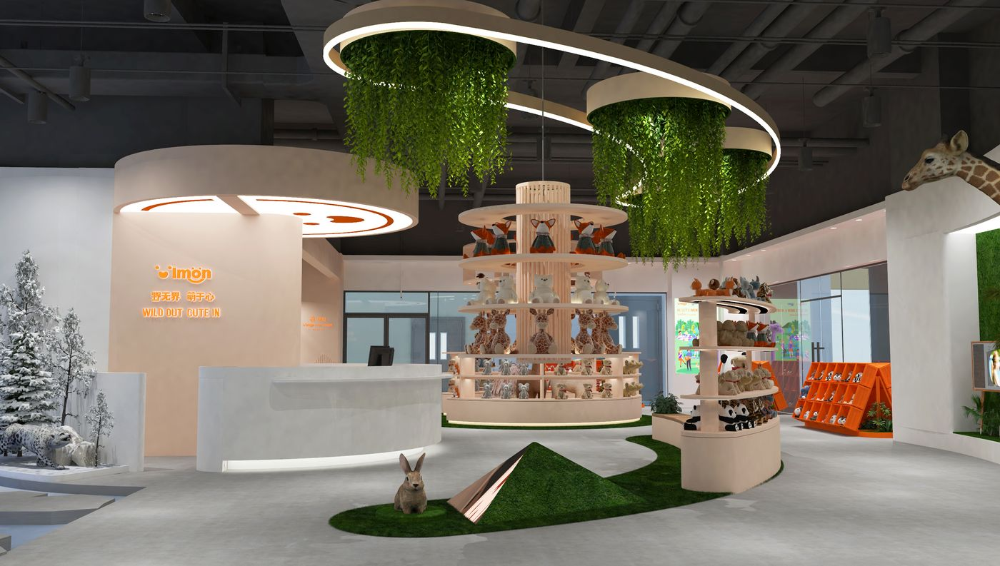
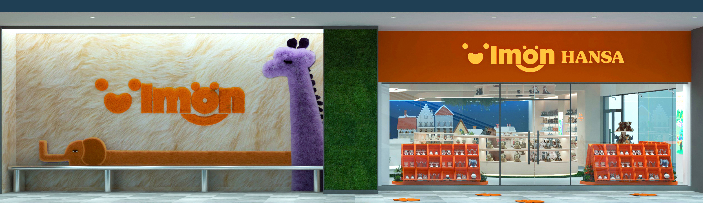
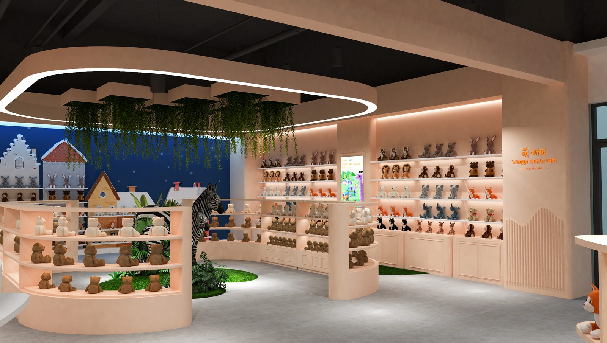
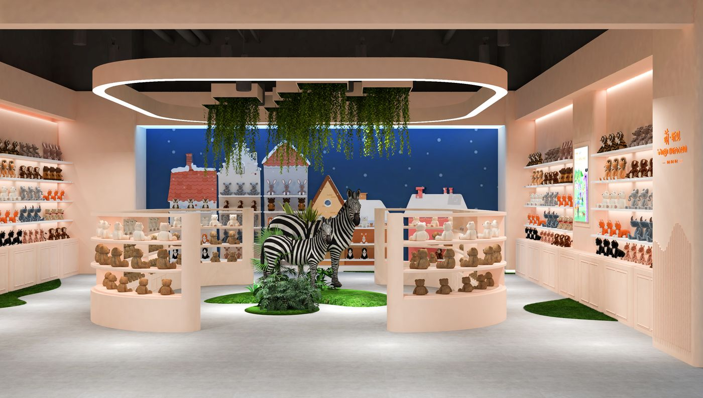
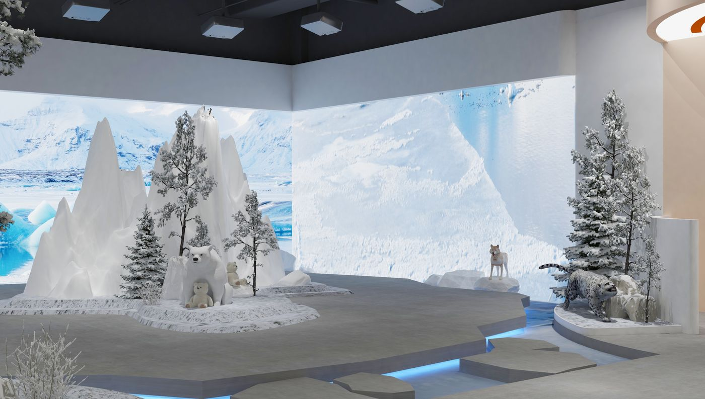

项目案例 / CASE STUDY · 01
IMON玩具体验馆

到空间体验。
作为项目负责人统筹 300㎡ 品牌旗舰店的客户对接、主题策划与方案落地。
From concept to spatial experience.
职责定位 / ROLE
项目负责人
PROJECT LEAD
工作范围 / SCOPE
客户对接 · 空间设计 · 方案汇报 · 图纸绘制
Client communication · Spatial design · Presentation · Documentation
02 / 空间策略
SPATIAL STRATEGY
通过空间语言建立从日常商业环境进入沉浸式体验的转换，让动线、材料与氛围共同构成完整的品牌体验。
A spatial language designed to shift the visitor from everyday context into a more immersive experience.

空间组织 / SPATIAL ORGANIZATION
通过入口、展示、互动与沉浸体验等功能节点，建立清晰而连续的空间阅读顺序。
- 01Entrance / 入口
- 02Reception / 接待
- 03Display / 展示
- 04Interactive Zone / 互动区
- 05Experience Zone / 体验区
03 / 核心体验
CORE EXPERIENCE
项目并非通过传统房间序列展开，而是围绕探索、停留与发现建立连续的空间体验。
The project is organized around moments of discovery rather than a conventional sequence of rooms.


04 / 空间旅程
SPATIAL JOURNEY
移动
停留
发现MOVE · PAUSE · DISCOVER.

项目总结 / PROJECT SUMMARY
可落地的空间体验。
Design leadership is not only about creating an image — but coordinating an idea into a deliverable spatial experience.